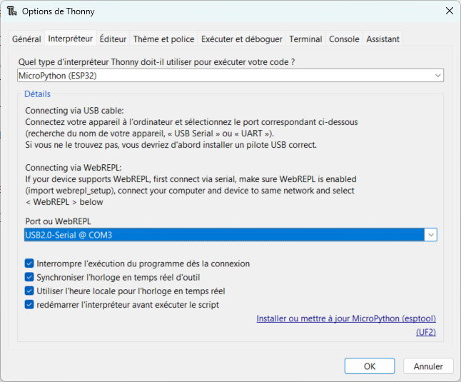
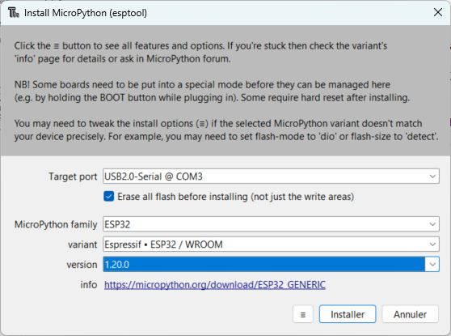
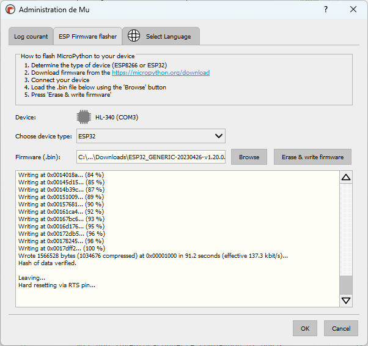
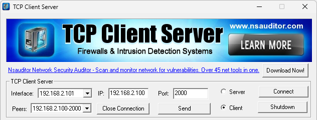

ESP32
Préparation de l'ESP32 pour MicroPython#
Avec le logiciel Thonny#
- Installer la dernière version du logiciel ;
- Connecter la carte ESP32 à votre PC via un cable USB ;
- Démarrer Thonny ;
- Dans le menu horizontal, cliquer sur
Exécuteret choisirConfigurer l'interpréteur; - Choisir le type d'interpréteur et le port série correspondants à la carte ;
- Cliquer sur le lien
Installer ou mettre à jour MicroPython (esptool);

- Renseigner tous les champs (lire les inscriptions idoines sur le µC) puis cliquer sur
Installer;

Si tout se passe bien, le prompt de l'interpréteur MicroPython doit apparaitre en console...
Avec le logiciel Mu#
- Installer la dernière version du logiciel ;
- Connecter la carte ESP32 à votre PC via un cable USB ;
- Démarrer Mu Editor et Choisir le mode
ESP MicroPython; - Cliquer sur le rouage tout en bas à droite et choisir l'onglet
ESP Firmware flasherpuis Suivre les instructions... ;

Si tout se passe bien, cliquer sur le bouton
REPLdu menu et le prompt de l'interpréteur MicroPython doit apparaitre en console...
Connecter l'ESP32 à un point d'accès#
Point d'accès = un réseau WLAN avec un des routeurs du labo de SI, un partage de connexion à votre smartphone...
- Saisir le programme MicroPython suivant :
# ESP32 : connexion à un point d'accès Wifi import network import time import ubinascii wlan = network.WLAN(network.STA_IF) # On créer l'objet wlan pour gérer la connexion wlan.active(True) # Activation de l'interface if not wlan.isconnected() : # On vérifie qu'on n'est pas déjà connecté print("Connexion au point d'accès...") # On demande une connexion en renseignant l'identifiant et le mot de passe du point d'accès wlan.connect('SSID', "Code") # Boucle d'attente... while not wlan.isconnected() : print('Connexion en cours...') time.sleep(0.5) # Confirmation de connexion print("Connecté en Wifi au point d'accès") # Affiche l'adresse logique que l'ESP32 à obtenu du DHCP print("Adresse IP de l'ESP32 = ", wlan.ifconfig()[0]) # Affiche l'adresse physique de l'ESP32 print("Adresse MAC de l'ESP32 = ", ubinascii.hexlify(wlan.config('mac')).decode('utf-8'))
A expérimenter...
- Saisir l'instruction
wlan.ifconfig()dans l'interpréteur pour obtenir plus d'informations concernant le réseau ; - Configurer une autre adresse IP statique compatible avec l'instruction
wlan.ifconfig('IP statique', 'Masque', 'IP Passerelle', 'IP DNS') - Quelle instruction permet d'obtenir l'adresse de la passerelle ?
- Tester la connexion de l'ESP32 vers la passerelle à l'aide du module uping.py à installer dans les fichiers de l'ESP32
import uping
uping.ping('IP de la passerelle')
- Scanner les point d'accès Wifi disponible avec l'instruction
wlan.scan()
...
Communication TCP Client/Serveur#
Serveur = ESP32#
- Saisir le programme MicroPython suivant sur l'ESP32 :
# ESP32 : programme pour serveur
import network
import socket
import time
import ubinascii
wlan = network.WLAN(network.STA_IF) # On créer l'objet wlan pour gérer la connexion
wlan.active(True) # Activation de l'interface
if not wlan.isconnected() : # On vérifie qu'on n'est pas déjà connecté
print("Connexion au point d'accès...")
# On demande une connexion au point d'accès
wlan.connect("SSID", "Code")
# Boucle d'attente...
while not wlan.isconnected() :
print('Connexion en cours...')
time.sleep(0.5)
# Confirmation de connexion
print("Connecté en Wifi au point d'accès")
# Affiche l'IPV4 que l'ESP32 à obtenu du DHCP
print("Adresse IP de l'ESP32 = ", wlan.ifconfig()[0])
# Affiche l'adresse MAC de l'ESP32
print("Adresse MAC de l'ESP32 = ", ubinascii.hexlify(wlan.config('mac')).decode('utf-8'))
# Partie serveur
s = socket.socket()
s.setsockopt(socket.SOL_SOCKET, socket.SO_REUSEADDR, 1)
# Le serveur écoutera le port 2000 un client à la fois
s.bind(('0.0.0.0', 2000))
s.listen(1)
# Attente d'un client
res = s.accept()
client_s = res[0]
client_adresse = res[1] # IP du client
print("Adresse IP du client : ", client_adresse)
requete = ''
# Boucle tant que le client n'a pas envoyé "stop"
while not (requete == "stop\r") :
# lecture de la requete du client
requete = client_s.recv(1024).decode('utf-8')
if requete == "" : # le client se déconnecte
requete = 'stop\r'
else :
# On affiche en console la requete du client
print(requete)
# On ferme la communication avec le client
client_s.close()
# On ferme le socket
s.close()
Clients = [PC, Raspberry PI, ESP32]#
- Démarrer le logiciel TCP Client Server sur un PC connecté au même réseau que l'ESP32 ;
- Cocher la case
Client; - Renseigner l'adresse IP du serveur dans la case
IPet préciser lePortde communication choisi ; - Cliquer sur le bouton
Connect;

- Transmettre vos demandes au serveur en cliquant sur le bouton
Send; - Vérifier leur bonne réception en console ;
- Couper la connexion en cliquant sur le bouton
Close Connection; - Vérifier l'arrêt du serveur...
Client en Python sur PC ou Raspberry Pi
# Python programme pour client
import socket
IP = '192.168.2.100' # IP du serveur
PORT = 2000 # Port choisi
s = socket.socket() # création du socket
s.connect((IP,PORT)) # connection au serveur
demande=""
while not (demande == b"stop\r\n") :
demande = input('Demande à envoyer = ')
demande = str.encode(demande + "\r\n")
s.send(demande) # envoi le message
# reponse_serveur = s.recv(1024).decode('utf-8')
# print('Réponse serveur = ', reponse-serveur)
s.close() # fermeture de la communication
Client en MicroPython sur ESP32
# ESP32 : programme pour serveur
import network
import socket
import time
import ubinascii
wlan = network.WLAN(network.STA_IF) # On créer l'objet wlan pour gérer la connexion
wlan.active(True) # Activation de l'interface
if not wlan.isconnected() : # On vérifie qu'on n'est pas déjà connecté
print("Connexion au point d'accès...")
# On demande une connexion au point d'accès
wlan.connect("SSID", "Code")
# Boucle d'attente...
while not wlan.isconnected() :
print('Connexion en cours...')
time.sleep(0.5)
# Confirmation de connexion
print("Connecté en Wifi au point d'accès")
# Affiche l'IPV4 que l'ESP32 à obtenu du DHCP
print("Adresse IP de l'ESP32 = ", wlan.ifconfig()[0])
# Affiche l'adresse MAC de l'ESP32
print("Adresse MAC de l'ESP32 = ", ubinascii.hexlify(wlan.config('mac')).decode('utf-8'))
# Partie client
s = socket.socket()
# On renseigne l'IP du serveur et le Port choisi
ip_serveur = '192.168.2.100'
port = 2000
# Connexion au serveur
s.connect((ip_serveur, port))
s.send("message de demande")
# reponse_serveur = s.recv(1024).decode('utf-8')
# print('Réponse serveur = ', reponse-serveur)
s.close()
Communication HTTP et IOT avec l'ESP32#
Page web affichant la valeur d'un capteur analogique#
Connecter un potentiomètre sur l'entrée I35 de l'ESP32 et y Saisir le programme MicroPython suivant :
import network
import time
import ubinascii
Try :
import usocket as socket
except :
import socket
# On définit l'entrée analogique utilisée
capt_analog = ADC(Pin(35)) # on crée l'objet connecté sur la broche 35
capt_analog.width(ADC.WIDTH_12BIT) # Pour 4096 valeurs
capt_analog.atten(ADC.ATTN_11DB)
# Code HTML de la page Web renvoyée par le serveur
html = b"""<!DOCTYPE html>
<html>
<head>
<title>ESP32 capteur analogique</title>
</head>
<body>
</body>
... A compléter...
Page web avec bouton et LED#
Ressources :#
- Ressource officiel en Anglais : https://docs.micropython.org/en/latest/esp32/quickref.html#
-
Non officielle mais en Français : https://micropython.fr/ (par Xavier HINAULT)
-
Pour la SoproLab :
-
Simulateur ESP32 en ligne https://wokwi.com/
-
Olivier Lécluse - Objets connectés (IoT) - MicroPython sur ESP8266 et ESP32
-
MicroPython : Module Relais avec ESP32/ESP8266 (Guide + Serveur Web)
- /! site avec beaucoup de pub : https://www.robotique.tech/tutoriel/construction-des-objets-connectes-bases-sur-la-carte-esp32/